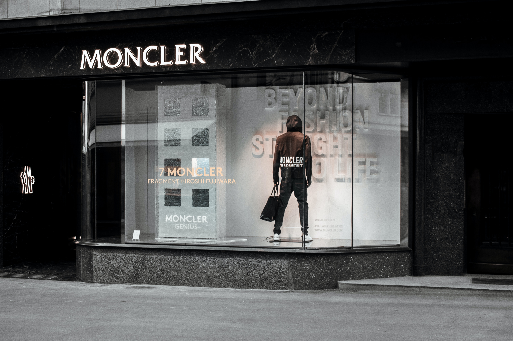

Main Lists
Connection
비슷한 래퍼들
- Drake
- Eminem
- Kendrik Lamar
Wostox
Wostox
halo, my name is Taewan and I likely to use macbook for programming. It is very honer to meet you.

Bashar Barakah Jackson (July 20, 1999 to February 19, 2020),
known professionally as Pop Smoke, was an American rapper. He was considered by many to be the face of Brooklyn drill. Born and raised in Canarsie, Brooklyn, Pop Smoke began his musical career in late 2018 with his debut single "Mpr (Panic Part 3 Remix)". Pop Smoke rose to fame with the release of his breakout singles "Welcome to the Party" and "Dior" in 2019. He often collaborated with UK drill artists and producers, who employed more minimal and aggressive instrumentation than drill artists from Chicago.